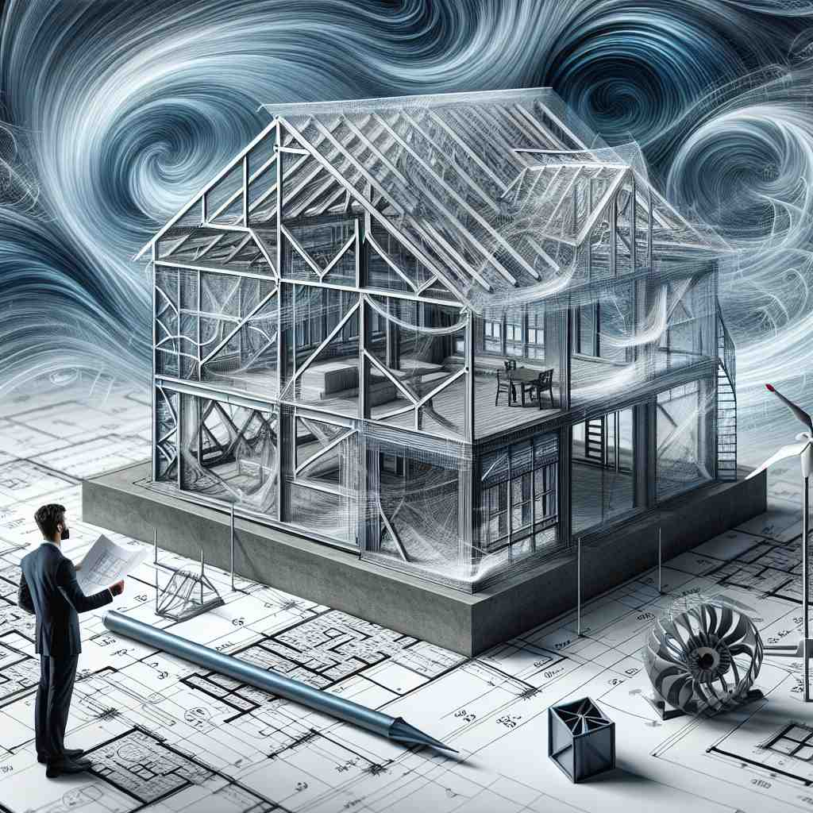
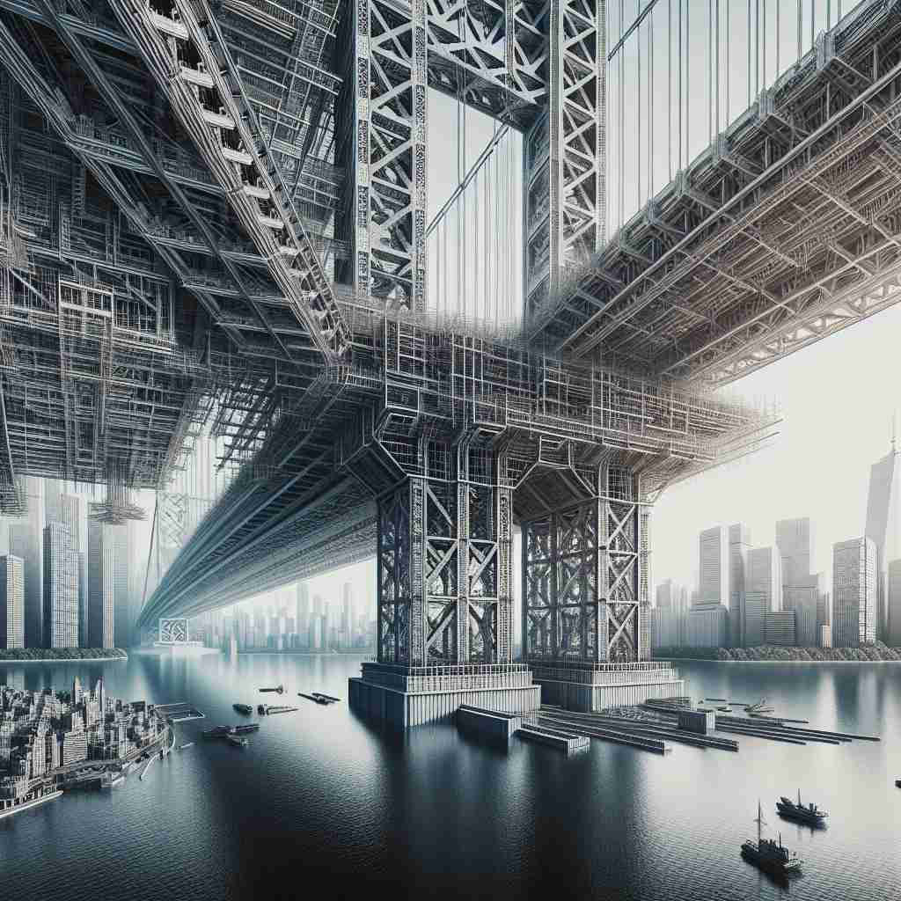

💬 The engineer is examining the bridge structure on the blueprint.

💬 The teacher explains the cell structure to his students.

💬 The architect studied the building structure in detail.

💬 The bridge structure is strong and well-designed.
🔈 ['strʌktʃə]
🗝️ n. the way in which parts are arranged or put together to form a whole
🖼️ 想象一下一个拼图游戏的场景，孩子们兴奋地将一个个小块拼接在一起，渐渐拼出完整的图画。每个小块都至关重要，展示了'structure'是如何通过不同部分的排列组合形成一个整体的。
🔍 想象'structure'是一个乐高积木模型。核心含义是积木的组合方式，衍生含义则是具体的模型（建筑物）、模型的设计图（组织结构）、说明书的编排（文章结构）、组装过程（动词用法）和微观结构（分子结构）。通过这个类比，你可以轻松理解和记忆'structure'的多重含义。
💬 The engineer is examining the bridge structure on the blueprint.
💬 The teacher explains the cell structure to his students.
💬 The architect studied the building structure in detail.
💬 The bridge structure is strong and well-designed.
🌳 由词根 “struct” （建设、建造）和后缀 “-ure” 组成。词根指的是 “建造” 的概念，后缀用于名词形式，整体表示为 “结构、构造”。
💡 记忆 “structure” 时，可以联想为 “construct” 的变体形式，其中包含建筑的概念，整体形成 ‘建筑的形态’ 来记住 ‘结构’ 的意思。
🗝️ n. something that is constructed
🖼️ 在一个热闹的建筑工地上，工人们忙碌地建造一座高楼大厦，钢筋混凝土逐渐形成雄伟的建筑。这展示了'structure'作为一个被建造的实体，比如建筑物。
💬 The Eiffel Tower is a famous structure in Paris.
❓ 由部件组合而成的具体物体
🗝️ n. the organization of a society or system
🖼️ 在一个市政会议上，官员们正讨论如何改善城市的公共交通系统。图表和数据分析显示了系统的各个部分是如何彼此关联的，展示了'structure'作为一个社会或系统的组织。
💬 The structure of the company includes several departments.
❓ 将社会或系统视为由不同部分组成的整体
🗝️ n. the arrangement of sentences or parts of sentences in a written work
🖼️ 在一个作家的书房中，作家正在修改他的小说。他仔细推敲每一段落的句子结构，以确保故事流畅而引人入胜，展示了'structure'作为文字作品中句子的排列方式。
💬 The essay's structure was clear and logical.
❓ 将文章视为由句子组成的整体
🗝️ v. to give a structure to; construct or arrange according to a plan
🖼️ 在一个设计工作室里，设计师正仔细地规划一个新产品的模型。他们将各部分精心安排，以符合特定功能和美学，这一过程展示了'structure'作为动词，指给某物赋予结构。
💬 We need to structure our time more efficiently.
❓ 主动进行整体的组织和安排
🗝️ n. the way in which a molecule is arranged
🖼️ 在一个科学实验室中，化学家们使用显微镜观察一个复杂的分子模型。他们研究原子的位置和结合方式，了解分子的结构性质，展现了'structure'在分子排列方式中的意义。
💬 The chemist studied the structure of the new compound.
❓ 将分子视为由原子组成的整体